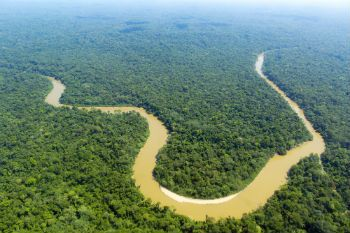
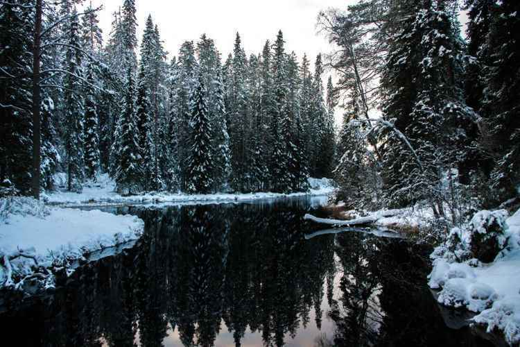
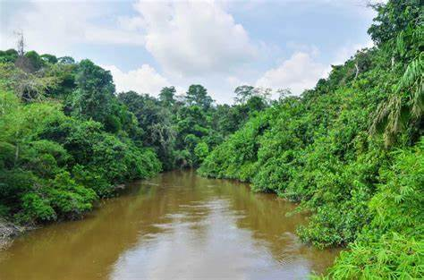
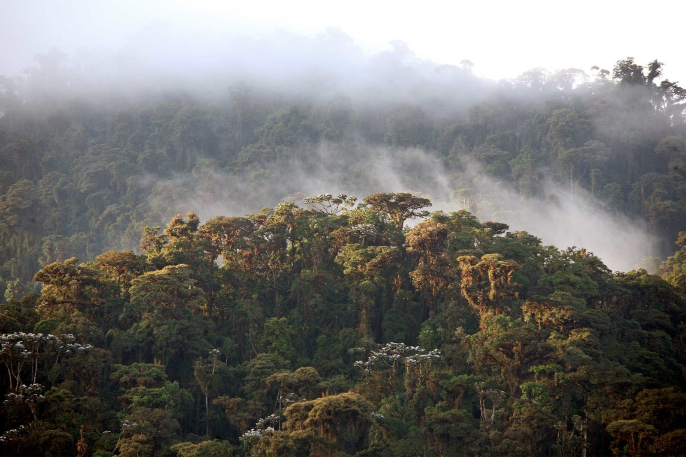
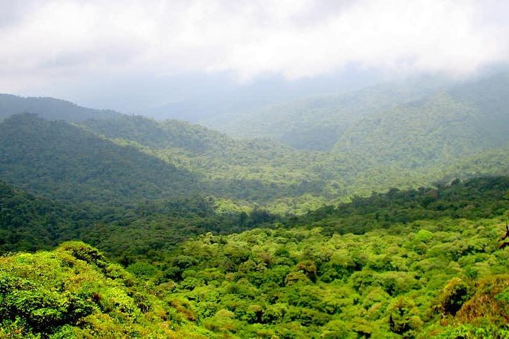
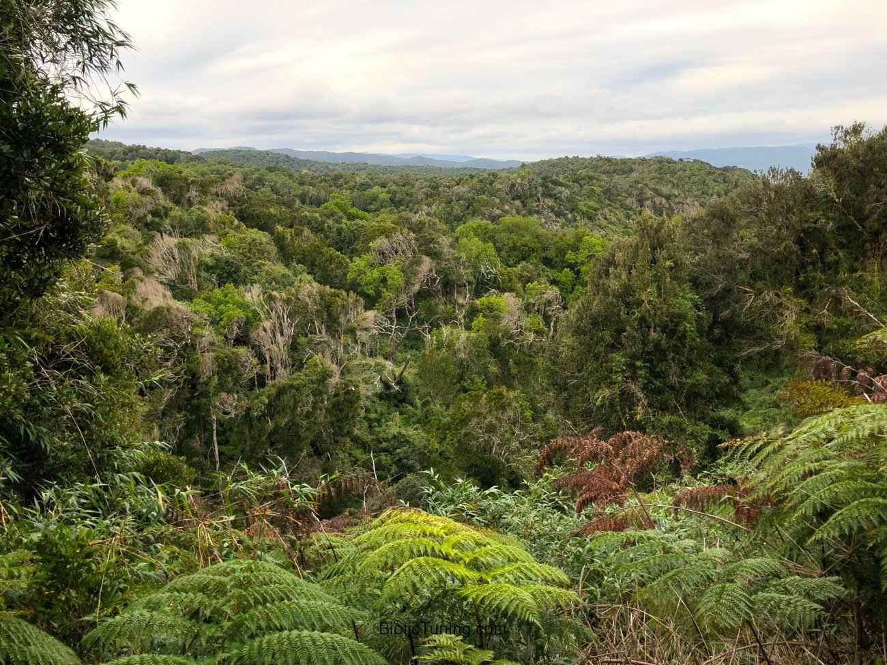

Floresta Amazônica
América Latina
A floresta tropical Amazônica, cobre boa parte do Noroeste do Brasil e se estende até a
Colômbia, o Peru e outros países da América do Sul, é a maior floresta tropical do
mundo, famosa por sua biodiversidade.
-4.479925, -63.5185396

Floresta de Taiga
Hemisfério Norte
A floresta de Taiga, também conhecida por floresta de coníferas, ou ainda floresta
boreal, é um bioma predominante das regiões localizadas em elevadas latitudes cujo clima
típico é o continental frio e polar, comumente encontrado no norte do Alasca, Canadá,
Sul da Groenlândia, etc.
68.951798, -97.360884

Floresta do Congo
África Central
Abrangendo países como Congo, Gabão e Guiné Equatorial,
a Floresta do Congo é uma das Maiores do mundo. Para o norte e para o sul, ocorre a transição
com o seco mosaico de florestas de savana da África,
sendo este composto por florestas secas, savanas e pradarias
-5.917583, 12.548442

Floresta Nublada
Equador
Floresta de nuvem (ou nublada) é caracterizada por cobertura de nuvens persistentes.
A sobrevivência da floresta está em questão por causa das taxas crescentes de desmatamento; o que se afirma
é que estas florestas vão sumir completamente em próximos 30 anos.
0.521990, -78.606375

Reserva florestal de Monteverde
Costa Rica
As florestas nubladas, também chamadas de florestas nebulosas, são encontradas em regiões
tropicais e subtropicais. Localizam-se no alto das montanhas, geralmente entre 500 e
3500 metros de altitude.
0.521990, -78.606375

Floresta Temperada "Valdivian"
Chile e Argentina
Esta floresta, geralmente nebulosa, está localizada na costa oeste do sul do continente América do Sul, se estendendo
principalmente pelo Chile e algumas regiões da Argentina, distribuída por 248.100 km².
-40.127513, -73.561407